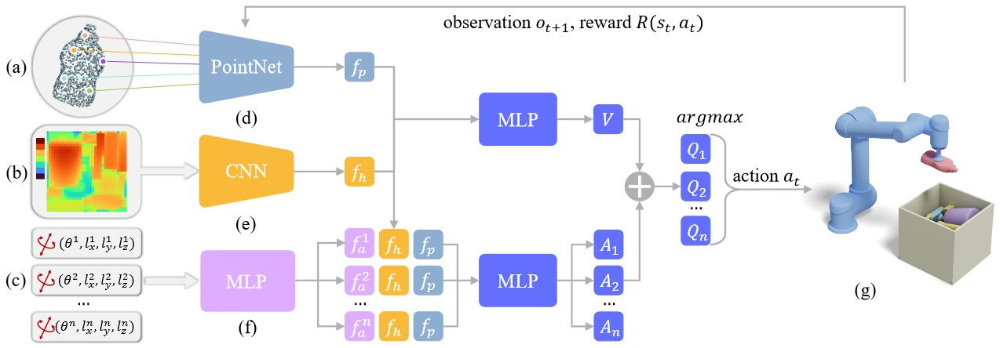

Learning Physically Realizable Skills for Online Packing
of General 3D Shapes
Hang Zhao, Zherong Pan, Yang Yu, Kai Xu*
ACM Transactions
on Graphics (to be presented at SIGGRAPH 2024)
We develop a learning-based solver for packing arbitrarily-shaped objects in a physically realizable problem setting. This figure shows an online virtual
packing setup (a), where objects move on a conveyor belt at a constant speed. Three RGB-D cameras are provided for observing the top and bottom surfaces of
the incoming object as well as packed object configurations inside the container. Within a limited time window, the robot has to decide on the placement for
the incoming object in the target container for tight packing. Packing results on 3D shapes with different geometric properties are shown in (b).
|
Abstract
|
We study the problem of learning online packing skills for irregular 3D shapes,
which is arguably the most challenging setting of bin packing problems. The
goal is to consecutively move a sequence of 3D objects with arbitrary shapes
into a designated container with only partial observations of the object
sequence. Meanwhile, we take physical realizability into account, involving
physics dynamics and constraints of a placement. The packing policy should
understand the 3D geometry of the object to be packed and make effective
decisions to accommodate it in the container in a physically realizable way.
We propose a Reinforcement Learning (RL) pipeline to learn the policy. The
complex irregular geometry and imperfect object placement together lead
to huge solution space. Direct training in such space is prohibitively data ntensive. We instead propose a theoretically-provable method for candidate
action generation to reduce the action space of RL and the learning burden.
A parameterized policy is then learned to select the best placement from the
candidates. Equipped with an efficient method of asynchronous RL accelera-
tion and a data preparation process of simulation-ready training sequences,
a mature packing policy can be trained in a physics-based environment
within 48 hours. Through extensive evaluation on a variety of real-life shape
datasets and comparisons with state-of-the-art baselines, we demonstrate
that our method outperforms the best-performing baseline on all datasets
by at least 12.8% in terms of packing utility.
|
|
|
Paper |
|
|
|
Slides |
|
|
|
Video |
|
|
| Images |

Our policy learning architecture. The input to our method is the surface point cloud (a) of the incoming object and the heightmap (b) of continuous
object configurations in the target container. Our neural network policy uses PointNet (d) and CNN (e) to extract features of object and container respectively
for 3D geometry understanding. Our geometric-inspired candidate generalization method would then provide a set of placements (c), each encoded as a feature using an MLP (f). Finally, our policy which is a dueling network ranks the placement candidates via the state-action value function, and the best
candidate is selected for execution. The continuous object configurations inside the target container are governed by a physics simulator (g). The packing
process continues with receiving the next observation until the container is full. Our RL algorithm trains the ranking policy by asynchronously sampling
trajectories and updating policy parameters with granted reward signals.
Visualization of various packing methods on three datasets. Each test instance is labeled with its utility/number of packed objects. Our learned policy
consistently exhibits tight packing and achieves the best performance.
Results generated by our online packing policies. Their utility and number of packed objects are labeled.
|
|
|
| Thanks |
The authors acknowledge the anonymous reviewers for their insightful comments and valuable suggestions. Thanks are also extended
to Yin Yang, Qijin She, Juzhan Xu, Lintao Zheng, and Jun Li for their
helpful discussions. Hang thanks Tong Zhang with heartfelt appre-
ciation for her support, understanding, and encouragement. This
work is supported by the National Key Research and Development
Program of China (2018AAA0102200), and the National Natural
Science Foundation of China (62132021, 62102435).
|
|
|
Code
Data |
|
|
|
| Bibtex |
@article
{zhao_tog23,
title = {Learning Physically Realizable Skills for Online Packing of General 3D Shapes},
author
= {Hang Zhao and Zherong Pan and Yang Yu and Kai Xu},
journal
= {ACM Transactions on Graphics},
volume
= {42},
number
= {5},
year
= {2023}
}
|
 
|
|